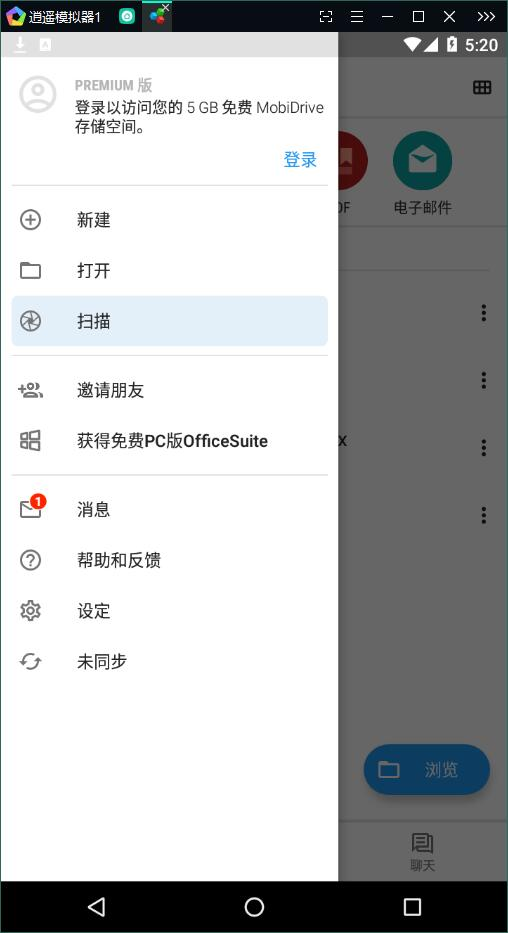

OfficeSuite 深度对比：五合一办公套件到底值不值得换
OfficeSuite 把文档、表格、演示、PDF、邮件塞进一个壳里，免费版就能导出 PDF，Premium 还送演讲者视图和 PDF 安全——用过一圈同类工具后聊聊它在这个赛道的真实位置。
手机上装一个办公套件到底够不够？这个问题我纠结了挺久。同类工具里有的主打纯云协作，有的靠系统自带，大厂方案功能全但体积膨胀，轻量的又缺模块——直到我从官方下载装上 OfficeSuite 用了一个多月，才明白它在这条赛道上卡了个很微妙的位置。
同类软件格局里它在哪儿
先说结论：OfficeSuite官网 不是某一类的极致选手，它是覆盖最全的全功能套件。同类里有的擅长协同编辑，有的在文档排版上更精细，系统自带的那个最省心但移动端几乎残废。它的定位是——把五个模块塞进一个应用，每个模块都做到日常够用，而且跨平台统一。
五合一这点是它的骨架：文档（Documents）、电子表格（Sheets）、演示文稿（Slides）、PDF、电子邮件，全部在同一个界面里切换。主页顶部五个彩色图标就是入口，不用在不同 App 之间跳来跳去。这点对于经常在手机上处理文档的人来说，省心程度远超预期。

差异化：它做得明显更好的两个点
免费版全模块导出 PDF
这个是我觉得最实诚的设计。同类工具里，导出 PDF 往往被当成 Premium 功能锁着，或者只开放给某一个模块。OfficeSuite 从文档到表格到演示，所有五个模块免费版都能直接导出 PDF——这对日常需求来说太关键了。
想象一下：手机上改完一份 Word，要发给同事，最稳妥的方式就是转成 PDF 邮件出去，格式不会乱，对方不需要装任何特定软件。OfficeSuite 直接在「文件 → 导出为 PDF」一步搞定，而且生成的 PDF 质量够硬，表格边框、幻灯片动画帧都能准确转过去。这一个功能就值回安装费了——何况是免费。
Premium 的演讲者视图 + 计时排练
如果你偶尔需要用手机或平板做个小型演示，这个功能会让你惊喜。投屏到大屏幕后，大屏幕只显示幻灯片本身，而你手里的设备上会弹出演讲者视图——当前页、下一页预览、演讲者备注、计时时钟，全部在一个界面里。备注不会出现在观众那边，只有你自己能看到。设置步骤也不复杂，去中文文档一搜就有。
更狠的是计时排练：开启后会记录你每页讲了多久，全部走完给出统计，保存后下次放映自动套用这些切换时间。展厅循环播放的场景直接设自动切换秒数就行，不用一遍遍手动点。这个功能在同类工具里真的不多见，尤其是移动端做得这么完整的。
PDF 安全全家桶
Premium 还带一整套 PDF 安全功能：打开密码（AES-256 加密）、权限密码（能打开但禁止打印复制）、文字或图片水印、证书加密。两层密码机制是亮点——只设权限密码的话，对方不用密码就能打开但操作受限；两层都设的话，权限密码打开受限、打开密码可以完全操作。
水印支持自定义内容、字体、颜色、透明度和角度，适合给内部流转的文档加个「机密」标记防截图盗用。签好名的 PDF 还能额外加密保护，防止签名被删除。这一套下来，敏感文档在外发前基本可以放心了。

取舍：为这些优势付出了什么
说了好的，也得说说不那么理想的地方。
首先是 Premium 门槛。上面提到的演讲者视图、计时排练、PDF 安全、PDF 转 Word/Excel、部分格式导出，这些都是付费专属。免费版能用但功能有上限——日常够用，进阶需求就得掏钱。不过对比同类 Premium 的定价，OfficeSuite 的价格还算公道，而且它偶尔会搞限时活动送序列号。
其次是部分导出格式锁在 Premium。比如 Documents 导出 .docx/.doc、HTML，Slides 导出图片、PDF 转 Word/Excel/ePub，这些免费版用不了。虽然导出 PDF 这个核心刚需免费了，但如果你需要进一步编辑或者转换格式，就得升级。这属于典型的取舍：核心功能开放拉新，进阶功能付费盈利。
还有一点是平台策略。OfficeSuite 有安卓版、iOS 版、Windows 版，Mac 版功能相对弱一些。主要精力还是在移动端——毕竟它的发家路线就是从手机办公开始的。如果你的主力平台是 Mac，可能需要留意一下版本差异。
选购结论
什么样的人选 OfficeSuite：
- 手机上经常处理文档的人：五合一 + 免费导出 PDF，一个应用搞定所有日常办公场景
- 偶尔需要做演示的人：演讲者视图 + 计时排练的组合在移动端很难找到替代品
- 对外发文档频率高的人：PDF 安全功能实用，尤其是需要给文档加密码或水印的场景
什么样的人选别的：
- 重度协同编辑用户：OfficeSuite 的协作功能不如主打云协作的工具强，多人实时编辑不是它的强项
- 极致排版需求：纯文档排版的精细度还有更好的专门工具
- 只用系统自带的：如果系统自带套件能满足日常，没必要多装一个
最后给一句明确的推荐：手机党装一个，Premium 值得买。它在移动端的五合一覆盖和免费导出 PDF 这两个点，是同类工具很难同时做到的。对了，整理这些资料时顺手在 GitHub、Gitee、GitCode 都做了备份，怕国内访问不稳的话就近找。